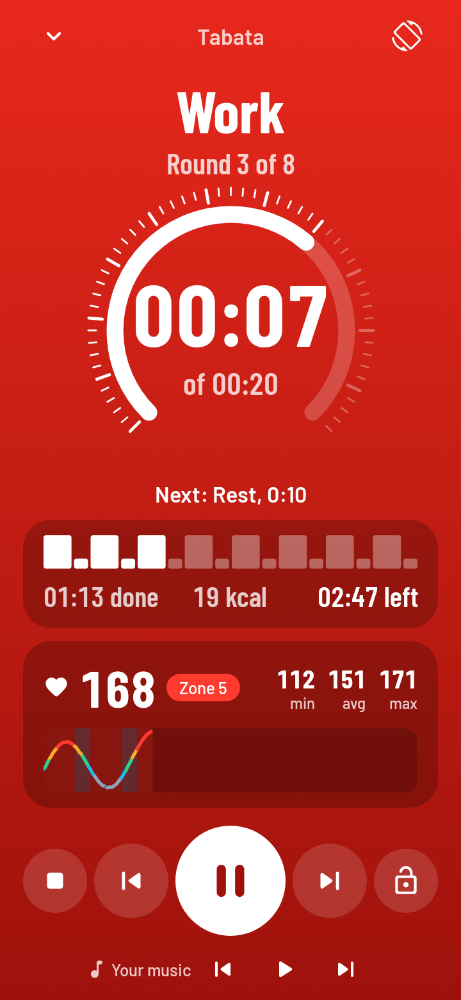
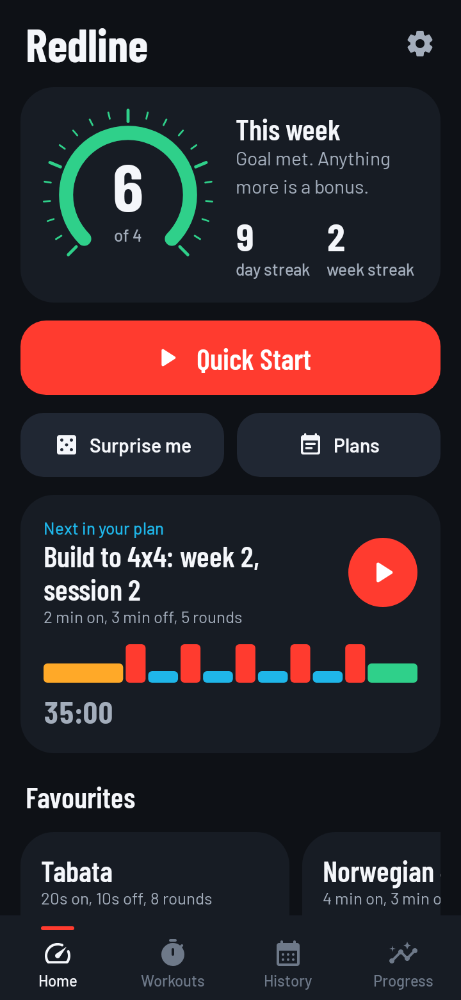
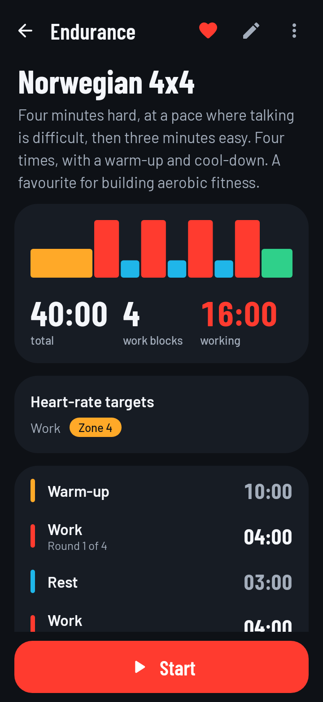
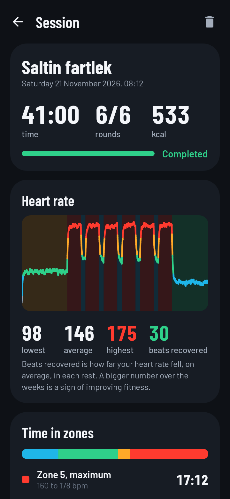
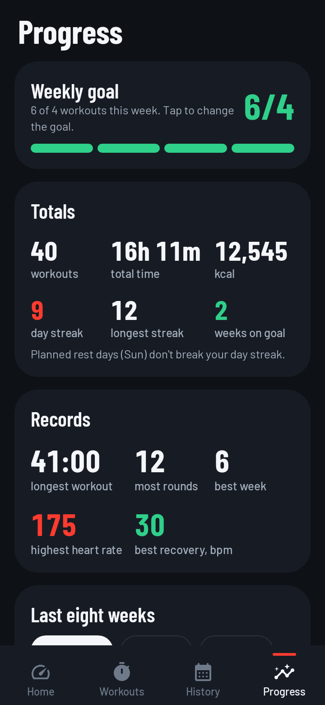
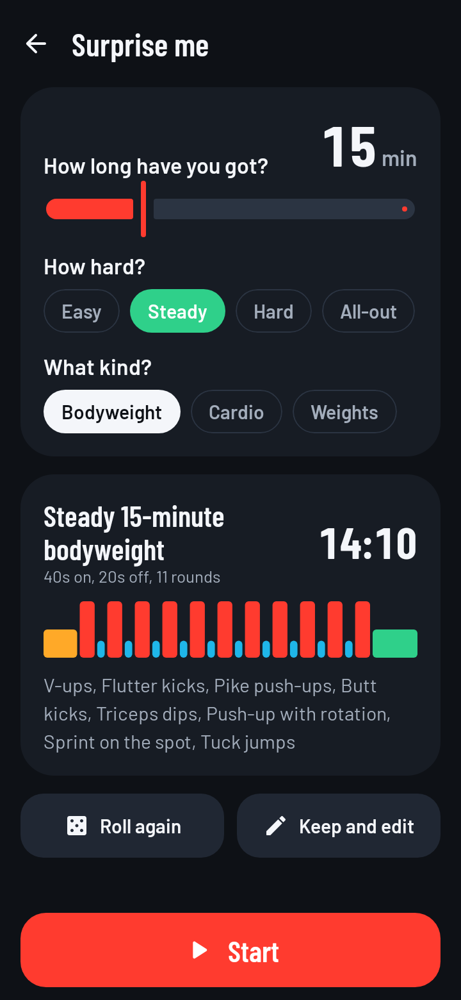

Go flat out. Redline counts the seconds.
Redline is an interval timer for Android. Pick a workout such as Tabata or the Norwegian 4x4, or build your own, and press Start. It fills the screen with the colour of each block, beeps and speaks every change, and keeps going with the screen off.
It is free, with no adverts and nothing to unlock. There is no account, and your workouts, your history and your heart-rate records stay on your phone.
Download for AndroidHow to install
- Version 1.0
- Android 10 or later
- 5.3 MB
Free, with nothing to unlock. No adverts, no account with the developer, no tracking. Compare or read the release notes.
Chrome may say the file might be harmful. It shows this for app files that do not come from Google Play. Choose Download anyway.

- No subscriptionEvery feature is in the free app.
- No advertsNone in the app and none on this site.
- No accountNothing to sign up to, nothing uploaded.
- Screen offThe timer keeps running and talking.
A look inside
These are the real screens, drawn from the app's own code with made-up workouts and sessions. Swipe or scroll sideways to see them all.





How it works
Interval training is short spells of hard effort with easy spells between them. The timer's job is to tell you which one you are in, so that you never have to look at a clock.
Pick a workout
Choose one of the 36 that come with the app, tap Quick Start for a plain work and rest timer, or build your own.
Press Start
A countdown to get ready, then red for work and blue for rest, with a beep and a voice at every change.
See what you did
The session is saved with its time, rounds and calories, and a heart-rate graph if you wore a sensor.
Everything is in, and all of it is free
Nothing below is held back for a paid tier, because there is no paid tier.
Workouts
- 36 ready-made workouts
- Tabata, EMOM, AMRAP, the Norwegian 4x4, fartleks, circuits, sprints, interval walking and boxing rounds, in folders.
- Build your own
- By rounds, with warm-up, work, rest, sets, breaks and cool-down, or block by block with a name on each block.
- Type it
- Write a workout as a line of text, such as
8x(20/10), and Redline lays it out. - Quick Start and Surprise me
- Work, rest, rounds and go, or say how long and how hard and let Redline make a session.
The timer
- A colour for every block
- Red for work, blue for rest, and colours of their own for warm-up, cool-down and breaks, behind giant digits.
- Screen off, still running
- The notification shows the countdown with Pause, Skip and Finish, and the timer can sit over the lock screen.
- Beeps, bells and a voice
- Five beep sets and your own Go sound. The phone's voice calls each change, the round, the exercise and the time left.
- Gym display and a TV clock
- Sideways at full brightness, and a full-screen clock of its own on a TV when the phone is mirrored.
Heart rate
- Bluetooth straps and armbands
- Live rate, zone, lowest, average and highest, and a live graph on the timer.
- Coaching to a zone
- Give a workout a target zone and the voice tells you to push harder or ease off.
Progress
- History and records
- A calendar of every session, with its graph, an effort score and your notes, plus records and eight-week trends.
- Goals, streaks and badges
- A weekly goal, a day streak and a weeks-on-goal streak, planned rest days that keep it, and 22 badges.
- Five plans
- Four to eight weeks each, three sessions a week, a little harder as they go.
Your training stays on your phone
No servers
Redline has no accounts and no servers. The developer receives nothing from the app.
Health Connect only if you ask
Sessions are written to Health Connect only when you switch it on.
No ads, no tracking
There is no advertising, analytics or tracking, in the app or on this site.
Installing and updating
Redline is not on Google Play, so your phone asks a couple of extra questions the first time.
Download the app file
Tap Download on your phone. The file is called Redline.apk and is about 5.3 MB. If Chrome says the file might be harmful, choose Download anyway.
Allow the install
Open the file. The first time, Android asks you to allow your browser to install apps. Allow it, go back and tap Install. If Google Play Protect steps in, choose More details, then Install anyway.
Updating later
Redline tells you when a newer version is out. Install the new file over the old one and everything you have saved is kept.
Version 1.0, released 17 November 2026. See the release notes, or check your download.
Questions
Is Redline really free?
Yes. There is no paid version, no subscription, no trial and no adverts, and nothing in the app is locked. See the comparison.
Is Redline on Google Play?
No. Redline is a personal project and is downloaded from this site as an Android app file. It needs Android 10 or later, which covers almost every phone sold in recent years.
Does it keep going with the screen off?
Yes. The workout runs in the background, the beeps and the voice still play, and the notification shows the countdown with Pause, Skip and Finish. A switch in Settings shows the timer over the lock screen, and another keeps the screen on for the whole workout.
Will it stop my music?
No. By default music from another app dips while Redline beeps or speaks, then comes back. You can have it left alone instead, so the cues play over the top.
Which heart-rate sensors work?
Bluetooth chest straps and armbands that send heart rate in the standard way, which most of them do. Most smartwatches, including Galaxy Watches, do not send heart rate to phone apps by themselves, so they do not appear. Redline does not measure heart rate with the phone.
Do I need a heart-rate sensor?
No. The timer, the cues, the history, the plans and the streaks all work without one. Without a sensor, calories are a rough estimate from the workout and your weight.
Does it need the internet?
No. A workout needs no internet at all. Redline goes online only to ask whether a newer version is out, once a day when you open it, and the first time you open the QR scanner. The detail is in the privacy policy.
What can I type in Type it?
Times are written as work/rest, so 20/10 is 20 seconds of work and 10 of rest. A number and x repeats what is in the brackets, wu and cd add a warm-up and a cool-down, break adds a longer break, and a name after a time labels it. There are examples further up this page.
How do I put the timer on a TV?
Mirror your phone to the TV, with Smart View on a Samsung phone or with a cable, then start a workout. The TV shows its own full-screen clock in the colour of the block. There is nothing to set up.
Is there a watch app?
No. Redline runs on the phone only, and it does not read heart rate from a watch.
How do I move my workouts to a new phone?
In Settings, open Backup and restore and choose Save a backup file. It holds your workouts, history and settings in one file. Send it to the new phone, install Redline there and choose Restore from a backup file.
How do I update Redline?
Redline tells you on its home screen when a newer version is out. Download it from this site and install it over the one you have. Your workouts, history and settings are kept.
Every interval called, so you can just go
Free, with no adverts and nothing to unlock. Made by the developer of several other free Android apps: see them all.